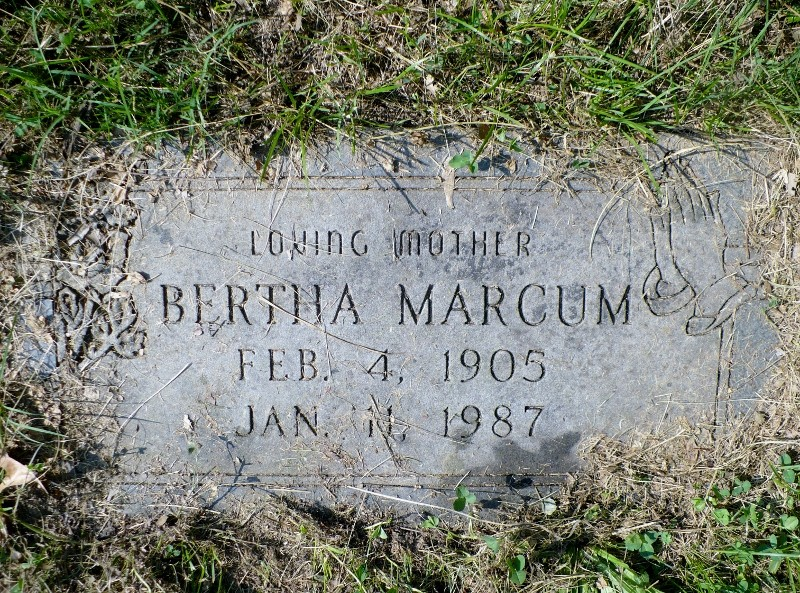

Bertha Owens Marcum
4 February 1905 – 11 January 1987
Quick Facts
Immediate Family
Parents
- Elbert B. Owens (1876–1948) — Find a Grave family link
- Angeline Cornett Owens (1880–1952) — Find a Grave family link
Spouses
- Hiram Marcum (1902–1986)
Children
- Ralph E. Marcum (1926–1927)
- Harold C. Marcum (1927–1999)
- Hiram C. Marcum (1929–1929)
- William K. Marcum (1930–1932)
- Lois K. Marcum (1932–1933)
- Mary Elizabeth Marcum Mullins (1936–1989)
- Beverly J. Marcum (1938–1945; infant sibling, not Harold’s later daughter)
- Jarvis E. Marcum (1941–1967)
Siblings
- Sudie Owens Smith (1901–1978)
- Ethel Owens Combs (1902–1990)
On Family Tree Sites
Person Archive
Life Timeline
4 February 1905 · Birth date on headstone
Married Hiram Marcum; Find a Grave links the couple. No marriage date is stated in the sources reviewed.
11 January 1987 · Death date on headstone; buried at Englewood Cemetery.
Life Story
Bertha Owens Marcum was born 4 February 1905 and died 11 January 1987, according to the dates on her headstone and Find a Grave memorial. She is buried at Englewood Cemetery in Perry County, Kentucky, with husband Hiram Marcum. Their linked memorial family group includes Harold Clayton Marcum, connecting them to this project’s Gen VI couple, though the relationships still need confirmation from original records.
Family links shown here are attributed to the named records; no other relative profiles were created for this Gen VI couple.
His mother died around 1927, when Homer was sixteen. His father later married Julia Bell Kelly, and that tied the family to the Kellys twice over: Julia's sister Sarah Hazel Kelly, a Georgia girl, became Homer's wife.
Homer and Sarah married on 6 August 1930 in Hamilton, Ohio. Six children followed through the 1930s: Eunice, Eugene, the twins Elmer and Earl, a daughter, and Homer Jr. In 1940 the family of eight lived on Ford Road in Morgan County, in the same house as five years before.
By 1950 they had moved north to Cincinnati, to 517 12th Street, and by 1953 to 519 E. 12th Street. In January 1952 the twins joined the Marines on their seventeenth birthday. Elmer served in California; Earl went to Korea and was wounded on 27 July 1953, the last day of the war; the family was told it was on Pork Chop Hill, but the Marines' last fight was at Boulder City and Hill 111. Homer lost Earl to a car crash in Kentucky in 1959.
Sarah died in Hamilton, Ohio, on 28 February 1987. Homer died in Palm Beach, Florida, on 8 March 1991, at seventy-nine, formerly of College Hill. He was buried beside Sarah at Spring Grove Cemetery in Cincinnati, under their shared stone. He left twenty-four grandchildren and thirty-eight great-grandchildren.
More of Homer's story will be added as family members share their memories.
Photo Gallery

Related family clippings pictured above are scans from the family collection. They are evidence about the Brewster household and descendants, not portraits of Homer except where the caption specifically identifies another person. An online memorial is also available: Find a Grave.
Sources and Evidence
- Find a Grave memorial 91958476: dates, Englewood Cemetery, spouse Hiram and linked family members. Derivative memorial.
- Find a Grave photo tab: headstone and surname marker photographs credited to SWF.
- Find a Grave memorial 134903781 for son Harold Clayton Marcum; linked family members name Bertha as mother. Its narrative has a conflicting father name; see research note.
- Find a Grave memorial 91958607: Hiram’s dated marker and linked household/children.
Grades: an original record says it · several records point to it · the family's own telling · a lead, not proved.
Research Notes and Open Questions
- The Gen VII assignment as mother of Harold Clayton Marcum is supported by the linked family-member entries on Find a Grave for Bertha and Harold and the matching family group under Hiram. The original birth/census documentation has not yet been inspected here; retain that qualification.
- Find a Grave’s Harold narrative gives “Harold Marcum” as father, but the same memorial’s linked parents and Hiram’s child list name Hiram Marcum. This contradiction is kept explicit rather than silently repaired.
- The memorial links siblings Sudie Owens Smith and Ethel Owens Combs and parents Elbert B. Owens and Angeline Cornett Owens. These are derivative page links; do not treat as primary records.
- No verified portrait was located. The images are headstone photographs, not portraits; both available images have been archived.
DNA
No DNA matches linked yet.
Family Notes
No Family Notes link has been supplied for this person.
Profile created 25 November 2026 for the Gen VII parentage research on Harold C. Marcum × Etta F. McFadden. Photo first, matching the live Homer/Virgil profile layout.